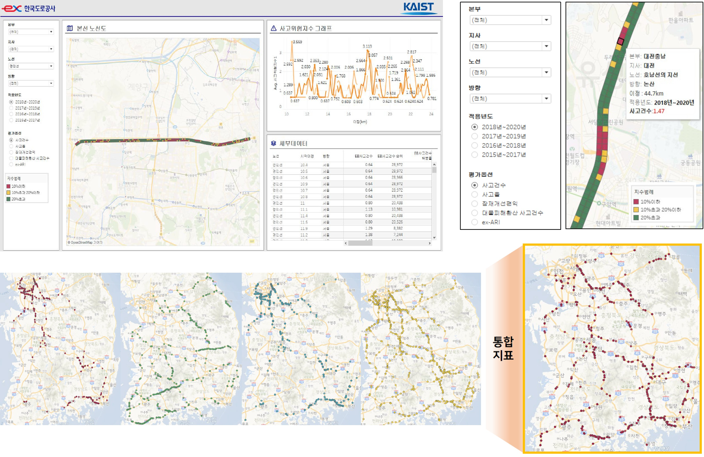

사고위험구간 선정을 위한 고속도로 사고위험도 지표 개발
Development of an Expressway Accident Risk Index for Identifying Hotspots
Korea Expressway Corporation · Mar. 2021 – Dec. 2021

Overview
전국 고속도로 노선의 도로안전진단(RSA) 우선순위를 결정하기 위해서는 정량적인 사고위험도 지표가 필요하다. 기존 사고건수법은 사고노출변수 미반영, 공간적 특성 미반영, 단일년도 임의 변동에 취약한 한계가 있다. 본 과제는 사고위험도를 계량화·정량화·순위 관리할 수 있는 평가 프로그램(ex-ARI)을 개발해, 위험순위가 높은 구간에 우선적으로 예산을 배정할 수 있도록 한다.
My Role
- 역할: 실무책임자(KAIST 석사과정) — 데이터 분석 및 알고리즘 구현
- 고속도로 사고 데이터 전처리 및 다중 안전지표 적용
- Continuous Risk Profile(CRP) 기반 위험도 계량화 알고리즘 개발
- 2021 KSCE 학술발표회 발표 (대한토목학회)
Methodology
미국 캘리포니아교통국의 도로안전 개선절차 1단계(Network Screening) 에서 사용하는 Continuous Risk Profile(CRP) 기법을 한국 고속도로에 적용한다. 사고위험도 계량지표 값을 가중이동평균 (Weighted moving average)으로 처리하고, 최소 검지 단위 100m와 사고 밀집도를 반영해 시점부터 종점까지 사고위험도를 연속적인 그래프로 도식화한다. 다중 안전지표(Empirical Bayes 등)를 결합해 단일년도 임의 변동에 대한 강건성을 확보한다.
Results / Key Outcomes
- 전국 고속도로 노선 대상 사고위험도 평가 프로그램(ex-ARI) 개발
- 위험구간 hotspot 시각화로 교통안전 업무 담당자의 경험적 지식 축적 지원
- 2021 KSCE Best Presentation Award 수상
- 관련 논문(Transportation Research Record 2022) 게재로 학술 성과 연계